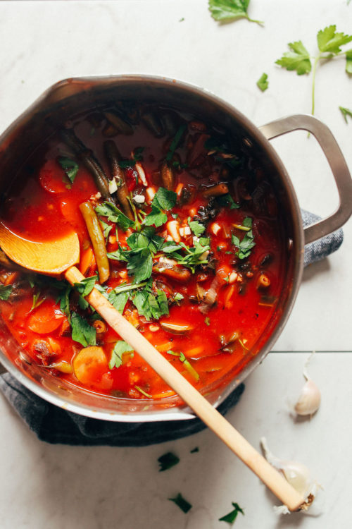

A selection of soups for different tastes which are also healthy, warming and boosts your mood over the roof. What happens to your body when you eat soup? Since soups are mostly liquid, they're a great way to stay hydrated and full. They give your immune system a boost. Soups can help you stave off cold and flu, and they're a great antidote for times when you are sick, too! Most soups are loaded with disease-fighting nutrients. Click here to find out more reasons to eat soups more frequently